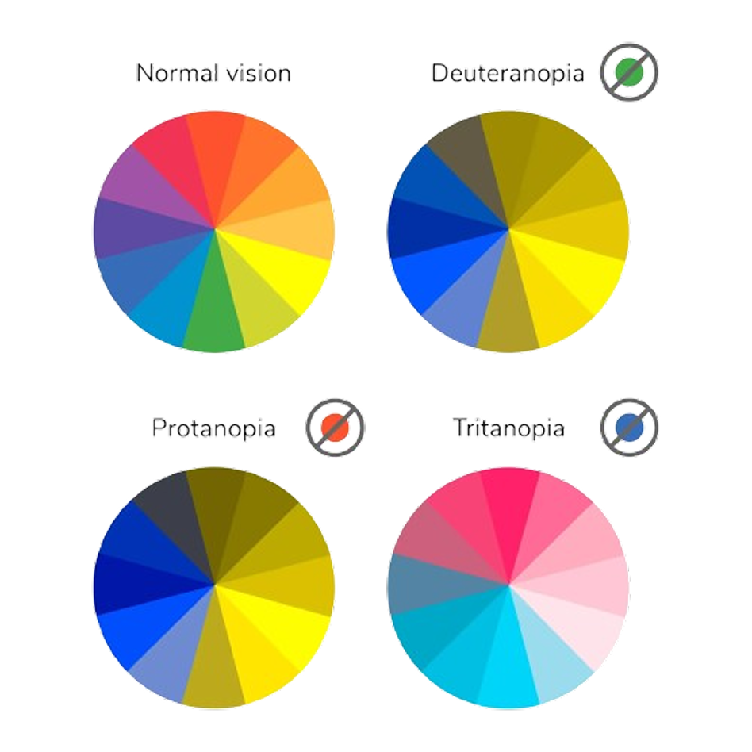
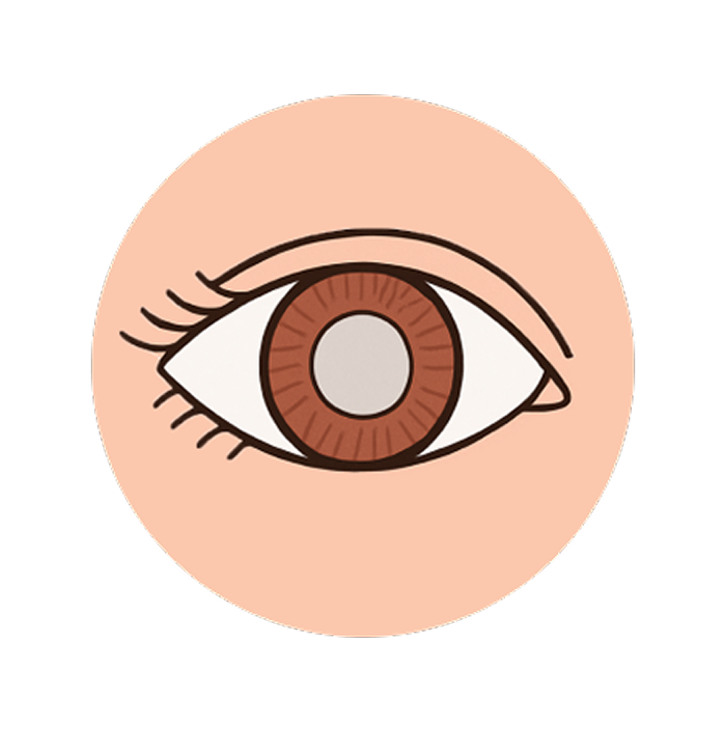
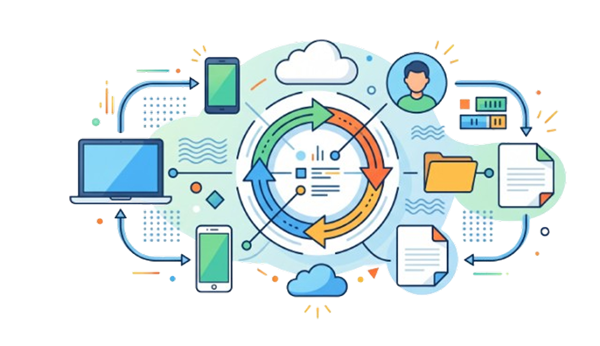

Tutoriais
Entenda tecnologias assistivas, semântica HTML, foco e anúncios dinâmicos com exemplos aplicáveis.
Ver todos os tutoriaisDesenvolvimento inclusivo começa aqui
Acesse gratuitamente tutoriais e documentações sobre acessibilidade digital para criar experiências que funcionem para mais pessoas.
Conteúdo para colocar em prática
Aprenda conceitos, consulte referências e transforme conhecimento em interfaces mais inclusivas.
Entenda tecnologias assistivas, semântica HTML, foco e anúncios dinâmicos com exemplos aplicáveis.
Ver todos os tutoriaisConsulte materiais de apoio detalhados para usar ferramentas de acessibilidade no desenvolvimento.
Acessar documentaçõesAcessibilidade é plural
O daltonismo altera a percepção de determinadas cores. Por isso, informações importantes não devem depender apenas da cor: combine contraste adequado com textos, ícones, padrões e estados visíveis.
Paletas testadas e mensagens claras ajudam pessoas com diferentes tipos de visão de cores a compreender conteúdos e concluir tarefas com autonomia.
Aprender sobre interfaces perceptíveis
assets/images/daltonismo-grafico.png.Pessoas cegas podem navegar com leitores de tela, teclado e linhas braille. Uma estrutura semântica consistente permite que títulos, regiões, links e controles sejam identificados com precisão.
Alternativas textuais significativas, ordem de foco lógica e rótulos objetivos tornam a experiência compreensível sem depender da apresentação visual.
Conhecer leitores de tela
assets/images/cegueira-olho.png.Conteúdos acessíveis precisam funcionar em diferentes dispositivos, tamanhos de tela, níveis de ampliação e modos de entrada. Layouts flexíveis preservam leitura e operação em cada contexto.
Boas áreas de toque, texto redimensionável e navegação independente de mouse criam experiências mais robustas para todas as pessoas.
Praticar acessibilidade em controles
assets/images/portabilidade-dispositivos.png.Compartilhe conhecimento
Organize uma ideia, revise seu conteúdo e prepare uma nova contribuição para o DEV A11Y.